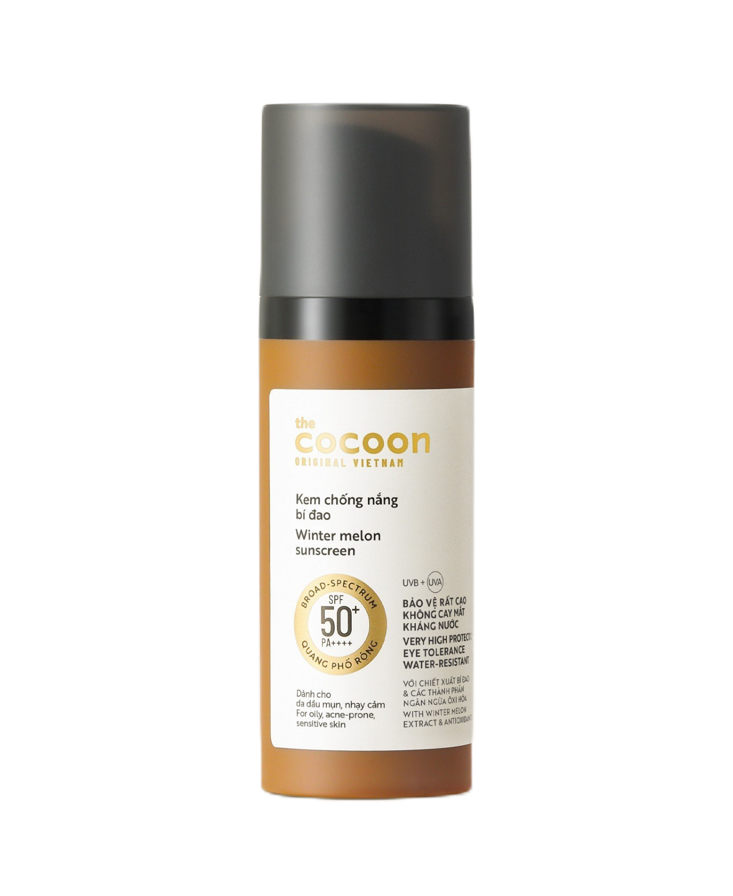

<!DOCTYPE html>
<html>
<head>
    <meta charset="utf-8" />
    <title></title>
    <link href="../css/bootstrap.min.css" rel="stylesheet" />
    <link href="../css/menu.css" rel="stylesheet" />
    <link rel="stylesheet" href="../css/chitietsanpham.css">
    <link rel="stylesheet" href="https://cdnjs.cloudflare.com/ajax/libs/font-awesome/4.7.0/css/font-awesome.min.css">
</head>
<body>
    <div id="header"></div>
    <!-- Khối sản phẩm chính -->
    <main>
        <div class="container-sp">
            <!-- Hình ảnh sản phẩm -->
            <div class="product-image">
                
            </div>

            <!-- Nội dung sản phẩm -->
            <div class="product-details">
                <h1>Thạch hoa hồng dưỡng ẩm 100ml</h1>
                <div class="price">
                    <del>400.000 ₫</del>
                    <p class="new">388.000 ₫</p>
                </div>
                <div class="description">
                    Cấp ẩm và nuôi dưỡng.
                </div>
                <div class="buttons">
                    <button class="buy-now">Mua ngay</button>
                    <button class="add-cart"
                            onclick="themVaoGio('Thạch hoa hồng dưỡng ẩm 100ml', 388000, '../images/sanpham_22.png')">
                        Thêm vào giỏ hàng
                    </button>
                </div>
            </div>
        </div>

        <!-- Khối mô tả dài xuống -->
        <div class="info-box">
            <h2>Thông số sản phẩm</h2>
            <table>
                <tr><td>Thương Hiệu</td><td>Cocoon</td></tr>
                <tr><td>Xuất xứ thương hiệu</td><td>Việt Nam</td></tr>
                <tr><td>Nơi sản xuất</td><td>Vietnam</td></tr>
                <tr><td>Loại da</td><td>Da dầu/Hỗn hợp dầu</td></tr>
                <tr><td>Dung Tích</td><td>50ml</td></tr>
            </table>
        </div>

        <div class="info-box">
            <h2>Hướng dẫn sử dụng</h2>
            <ul>
                <li>Sử dụng vào buổi sáng, trước khi trang điểm và trước khi ra nắng 15 phút.</li>
                <li>Nên thoa một lượng nhiều, đảm bảo che phủ toàn mặt và cổ.</li>
                <li>Thoa lại khi cần để duy trì lớp bảo vệ, đặc biệt là sau khi đổ mồ hôi, bơi lội hoặc dùng khăn lau.</li>
            </ul>
            <h3>Lưu ý:</h3>
            <ul>
                <li>Sử dụng kem chống nắng là một cách để giảm thiểu những nguy hiểm do tiếp xúc với ánh nắng mặt trời. Không ở quá lâu dưới ánh nắng, ngay cả khi đang sử dụng sản phẩm chống nắng. Tránh ánh nắng giữa trưa.</li>
                <li>Chỉ sử dụng ngoài da.</li>
                <li>Tránh tiếp xúc với mắt</li>
            </ul>
        </div>

        <div class="info-box">
            <h2>Thành phần sản phẩm</h2>
            <p><strong>Thành phần chính:</strong></p>
            <ul>
                <li><b>Chiết xuất bí đao:</b> có tác dụng giảm viêm, kháng khuẩn, làm dịu, giúp giảm mụn viêm.</li>
                <li><b>Vitamin B3 (Niacinamide):</b> tăng cường hàng rào bảo vệ da ngăn lại các tác động xấu từ môi trường như ô nhiễm, khói bụi, góp phần tổng hợp ceramide của lớp sừng và hyaluronic acid tự nhiên.</li>
                <li><b>Vitamin E (Tocopherol):</b> là một chất chống oxi hoá mạnh được chiết xuất hoàn toàn từ đậu nành không biến đổi gen (Non-GMO).</li>
                <li><b>Hydroxymethoxyphenyl Decanone:</b>  là một chất chống oxi hoá bảo vệ tế bào, giảm tình trạng kích ứng, bảo vệ da khỏi những tổn thương.</li>
                <li><b>Tetrahexyldecyl Ascorbate:</b>  là một dẫn xuất vitamin C chống oxi hoá mạnh, bảo vệ tế bào trước bức xạ UV và ngăn ngừa sự hình thành sắc tố do UV gây ra.</li>
                <li><b>Tinosorb A2B (Tris-Biphenyl Triazine):</b> là màng lọc thế hệ mới bảo vệ hiệu quả nhất trong quãng UVB/UVA2 với đỉnh hấp thụ là 310nm, đồng thời giúp tăng cường cho quãng UVA1.</li>
                <li><b>Uvinul T150 (Ethylhexyl Triazone):</b> màng lọc thế hệ mới mang lại khả năng hấp thụ ổn định UVB cao nhất trong số tất cả các bộ lọc UVB trên thị trường hiện nay.</li>
                <li><b>Uvinul A Plus (Diethylamino Hydroxybenzoyl Hexyl Benzoate):</b> là màng lọc thế hệ mới chống UVA2/UVA1 rất mạnh với đỉnh bảo vệ lên đến 354nm, cùng khả năng bảo vệ tuyệt vời ngăn lại các gốc tự do.
                <li>
                <li><b>Parsol 1789 (Avobenzone - Butyl Methoxydibenzoylmethane):</b> được xem là màng lọc chống UVA mạnh nhất hiện nay và cũng là màng lọc duy nhất được thông qua trên toàn cầu với quãng hấp thụ rộng và đỉnh hấp thụ rất cao 357 nm.</li>
            </ul>
            <h2>Thành phần đầy đủ:</h2>
            <p>
                Aqua/Water, C12-15 Alkyl Benzoate, Isododecane, Cyclopentasiloxane, BisEthylhexyloxyphenol Methoxyphenyl Triazine, Butyloctyl Salicylate, Tris-Biphenyl Triazine, Silica, Methyl Methacrylate Crosspolymer, Dicaprylyl Carbonate, Ethylhexyl Triazone, Butyl Methoxydibenzoylmethane, Diethylamino Hydroxybenzoyl Hexyl Benzoate, Ethylhexyl Methoxycrylene, Caprylyl Methicone, Benincasa Cerifera Fruit Extract, Niacinamide, Betaine, Hydroxymethoxyphenyl Decanone, Tetrahexyldecyl Ascorbate, Glycine Soja (Soybean) Seed Extract, Acrylates/C10-30 Alkyl Acrylate Crosspolymer, Trimethylsiloxysilicate, Glycerin, Propanediol, Butylene Glycol, Pentylene Glycol, 1,2-Hexanediol, Trisodium Ethylenediamine Disuccinate, Tocopherol, Decyl Glucoside, Ethylhexylglycerin, Caprylic/Capric Triglyceride, Disodium Phosphate, Xanthan Gum, Phenoxyethanol.
            </p>
        </div>

        <div class="info-box">
            <h2>Mô tả chi tiết</h2>
            <p>

                Kem Chống Nắng Cocoon Bí Đao Quang Phổ Rộng 50ml là sản phẩm chống nắng da mặt đến từ thương hiệu mỹ phẩm thuần chay Cocoon của Việt Nam, với công thức đột phá kết hợp các màng lọc thế hệ mới, chiết xuất bí đao và các thành phần chống oxi hoá, kem chống nắng bí đao mang lại khả năng bảo vệ phổ rộng chống lại bức xạ UVA và UVB là nguyên nhân gây ra tác hại lên da như bỏng rát, cháy nắng, kích ứng, lão hoá và tổn thương tế bào da. Cocoon Winter Melon Suncreen với khả năng bảo vệ rất cao SPF 50+, PA ++++ và hỗ trợ làm giảm độ bóng nhờn trên da hiệu quả.
            </p>
        </div>
    </main>
    <div id="footer"></div>
    <script src="../js/HeadervaFooter.js"></script>
    <script src="../js/add_cart.js"></script>
    <script src="../js/bootstrap.bundle.min.js"></script>
</body>
</html>